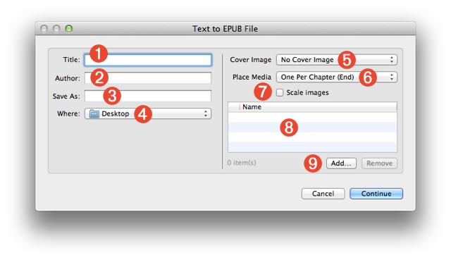
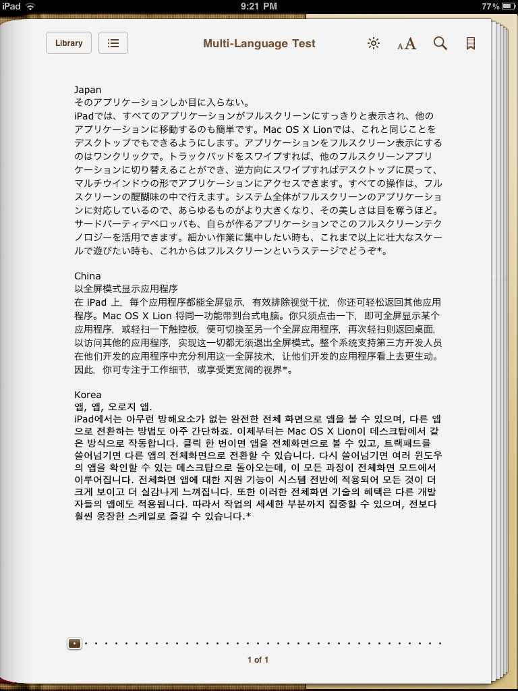

Text to EPUB File
The ability to easily create and share information is an essential requirement for businesses and classrooms alike. Since many computers and mobile media devices now support digital reader applications, the use of digital books as a means of content delivery has dramatically increased. On the iPad and the iPhone, the Apple-provided reader application is iBooks, and it supports the viewing of both commercial and non-commercial digital publications, including those created in the free and open Electronic Publication (EPUB) format.
A third-party application for reading EPUB documents on Mac OS X is Bookle by Stairways Software. It is available on the App Store as well.
Mac OS X Lion includes a built-in Automator action, named Text to EPUB File, that is designed to make it very easy to convert selected text or text documents into EPUB books, ideal for transferring to iPads and iPhones. Additionally, the created EPUB books can include images, MPEG audio, or MPEG video files.
NOTE: If the source documents for the action are in Rich Text Format (RTF), any formatting they possess will be preserved, and display correctly in the EPUB document. HOWEVER, files in RTFD format (Rich Text with embedded images and/or media) are not supported as input.
Also, the action includes full Unicode support, so Asian and Arabic characters are preserved as well.
The Action Interface
The action's interface is divided into two sections: on the left are the input fields for determining the created file name and location,; and on the right are the controls for adding related images, audio files, or movies. Here's an overview of the action interface controls.
Document Parameters and Metadata: (NOTE: all of these controls accept Automator workflow variables as input)
- Title - Enter the title of the book in this text field (1).
- Author - Enter the author of the book in this text field (2). By default, the name of the current user will be used.
- File Name - Enter the name for the created EPUB document in this text field (3). EPUB file names must end with a name extension of "epub" like: My Story.epub
- File Destination - Choose the folder that will contain the created EPUB document from this popup menu (4).

Optional Media:
- Cover Image - Optionally, the EPUB book can have a custom cover image. Select the image file to be used as the cover image from this popup menu (5).
- Media Placement - Images, audio (.m4a), or video (.m4v) files added to the book are placed one per chapter at either the beginning or end of each chapter. Select the insertion location from this popup menu (6).
NOTE: additional media files (those unassigned to chapters) will be placed as a group at the end of the book in a chapter titled "Illustrations." For example, if seven images are added to a book containing three chapters, the first three images in the list will be placed one-per-chapter and the remainning four images will be placed in an illustrations chapter at the end of the book. - Scale Images - Select this checkbox (7) if you want to reduce the file size of the EPUB document by scaling the images added to the book to fit within 1024 pixels.
- Media List - A list of the added media files (8). Files can be added or removed using the controls beneath the list view (9).
EPUB Services
By default, Mac OS X Lion does not include any services that use the Text to EPUB File action. However, the Text to EPUB Services collection available on this website contains four Automator services for converting text into digital books:
- Create EPUB Book with Selected Files
- Create EPUB Book with Selected Text
- Create Formatted EPUB Book with Selected Text
- Create EPUB Book with Contents of Clipboard
View the service workflows
Download the service files
Media Preparation
Audio and video files should be encoded prior to using them with the Text to EPUB File action. Video files added to EPUB documents must be in MPEG (.m4v) format, and audio files must be in MPEG (.m4a) format. Fortunately, Mac OS X Lion includes two built-in services for converting video and audio files to the proper formats for inclusion in digital books. These services appear in the Finder's contextual menu when appropriate audio/video source files are selected:
- Encode Selected Movie Files • This service will encode movie files (.mov) selected in the Finder, to MPEG files (.m4v) for use with AppleTV, iPod, iPhone, or the iPad. (learn more)
- Encode Selected Audio Files • This service will encode selected audio files of WAV, AIF, CAF, or SDII formats, to MPEG (.m4a) files for use with the iPod, iPhone, or the iPad. (learn more)
DOWNLOADS AND TUTORIALS
You can download the installer for the EPUB services here.
In addition to the service installers, this website contains two hands-on tutorials with example materials.
- Simple Formatted Book • create a single-flow formatted book from the text selected in a document.
- Multi-Chapter Book • create a multiple chapter book from selected text files, and add audio and image files as well.
